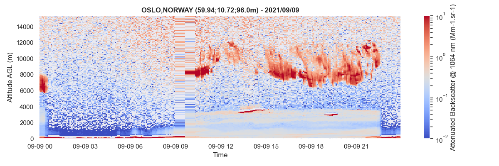
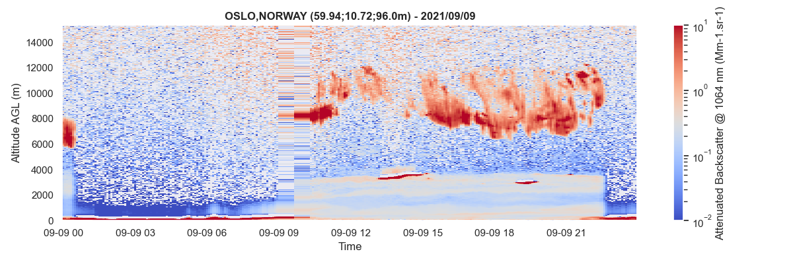

Examples¶
Some basic examples for getting you started using aprofiles. For more
information, check out the API.
Data reading¶
For reading ceilometers and lidars data, the ReadProfiles class must be instantiated with the path of the NetCDF file to be read. The read() method applied to this instance returns a ProfilesData object whose data attribute contains the NetCDF file content as a xarray.Dataset.
import aprofiles as apro
# path of the NetCDF file to be read
path = "examples/data/E-PROFILE/L2_0-20000-001492_A20210909.nc"
# instantiate the ReadProfiles class with the file path
apro_reader = apro.reader.ReadProfiles(path)
# call the read method of the instance
profiles = apro_reader.read()
# plot the attenuated backscatter profile
profiles.plot(
var="attenuated_backscatter_0", zref="agl", log=True, vmin=1e-2, vmax=1e1,
save_fig="examples/images/attenuated_backscatter.png"
)

Basic corrections¶
Here is a non exhaustive list of basic corrections available to correct profile measurements.
Extrapolation lowest layers¶
It is frequent to observe negative values in the lowest layers of the profiles due to instrumental artifacts. It is recommended to eliminate those outliers prior to detecting parameters such as the planetary boundary layer height or before retrieving the aerosol profiles. The extrapolate_below() method of the ProfilesData class allows you to extrapolate values of the selected variable of a ProfilesData object.

import aprofiles as apro
# path of the NetCDF file to be read
path = "examples/data/E-PROFILE/L2_0-20000-001492_A20210909.nc"
profiles = apro.reader.ReadProfiles(path).read()
# extrapolate lowest layers
profiles.extrapolate_below(z=150.0, inplace=True)
# plot the attenuated backscatter profile up to 1000m of altitude
profiles.plot(
zref="agl", zmax=1000.0, log=True, vmin=1e-2, vmax=1e1,
save_fig="examples/images/lowest_extrap.png"
)

Gaussian Filtering¶
The application of a Gaussian filter can help increase the SNR (which can be determined with the snr() method).
import aprofiles as apro
# path of the NetCDF file to be read
path = "examples/data/E-PROFILE/L2_0-20000-001492_A20210909.nc"
profiles = apro.reader.ReadProfiles(path).read()
# gaussian filtering
profiles.gaussian_filter(sigma=0.5, inplace=True)
# plot the attenuated backscatter profile
profiles.plot(
log=True, vmin=1e-2, vmax=1e1,
save_fig="examples/images/gaussian_filter.png"
)

More advanced detection¶
Fog or condensation detection¶
Fog or condensation prevents the laser beam from propagating into the atmosphere. It is important to detect these cases to filter the data when trying to quantify the aerosol content. Two methods are available:
- cloud_base (default): uses the minimum cloud base height.
- snr (fallback if no clouds are available): identifies areas under a certain altitude for which snr values lower than the prescribed threshold.
import aprofiles as apro
# read some data
path = "examples/data/E-PROFILE/L2_0-20000-001492_A20210909.nc"
profiles = apro.reader.ReadProfiles(path).read()
# basic corrections
profiles.extrapolate_below(z=150., inplace=True)
# foc detection
profiles.foc(zmin_cloud=200.)
# plot image below 6000m with a highlight on foc
profiles.plot(
show_foc=True, zmax=6000., vmin=1e-2, vmax=1e1, log=True,
save_fig="examples/images/foc.png"
)

Clouds detection¶
The clouds module aims to detect the clouds from the aerosols. Two methods are available:
- dec (default): Deep Embedded Clustering (see AI-Profiles).
- vg: Vertical Gradient.
import aprofiles as apro
# read some data
path = "examples/data/E-PROFILE/L2_0-20000-001492_A20210909.nc"
profiles = apro.reader.ReadProfiles(path).read()
# basic corrections
profiles.extrapolate_below(z=150., inplace=True)
# clouds detection
profiles.clouds()
# plot image with clouds
profiles.plot(
show_clouds=True, log=True, vmin=1e-2, vmax=1e1,
save_fig="examples/images/clouds_dec.png"
)

Planetary Boundary Layer tracking¶
The Planetary Boundary Layer module identifies the PBL heigh as the strongest vertical gradient of the attenuated backscatter profiles.
import aprofiles as apro
# read some data
path = "examples/data/E-PROFILE/L2_0-20000-001492_A20210909.nc"
profiles = apro.reader.ReadProfiles(path).read()
# basic corrections
profiles.extrapolate_below(z=150., inplace=True)
# planetary boundary layer detection
profiles.pbl(zmin=200., zmax=3000., under_clouds=False, min_snr=2., verbose=True)
# plot image with pbl tracking
profiles.plot(
zmax=6000., show_pbl=True, log=True, vmin=1e-2, vmax=1e1,
save_fig="examples/images/pbl.png"
)

Aerosol retrieval¶
Extinction¶
The aerosol extinction module retrieves extinction profiles by using a prescribed a priori (Lidar ratio, or AOD). Both backward and forward methods have been implemented and can be used in this module.
import aprofiles as apro
# read some data
path = "examples/data/E-PROFILE/L2_0-20000-001492_A20210909.nc"
profiles = apro.reader.ReadProfiles(path).read()
# basic corrections
profiles.extrapolate_below(z=150., inplace=True)
# aerosol retrievals - forward inversion
profiles.inversion(
zmin=4000., zmax=6000., remove_outliers=False, method="forward", verbose=True
)
# plot extinction profiles
profiles.plot(
var="extinction", zmax=6000., vmin=0., vmax=5e-2,
save_fig="examples/images/forward.png"
)

Concentration¶
Aerosol mass concentration is calculated by inversion(), if mass_conc=True (default), for different aerosol types when calculating the extinction profiles. Together with extinction, other variables are added to the instance of the ProfilesData class: mass_concentration:[aer_type].
import aprofiles as apro
# read some data
path = "examples/data/E-PROFILE/L2_0-20000-001492_A20210909.nc"
profiles = apro.reader.ReadProfiles(path).read()
# basic corrections
profiles.extrapolate_below(z=150., inplace=True)
# aerosol retrievals - forward inversion
profiles.inversion(
zmin=4000., zmax=6000., remove_outliers=True, method="forward", verbose=True
)
# plot mass concentration profiles im the case of desert dust
profiles.plot(
'mass_concentration:dust', zmax=6000., vmin=0., vmax=100., cmap='Oranges',
save_fig="examples/images/mass_conc-dust.png"
)